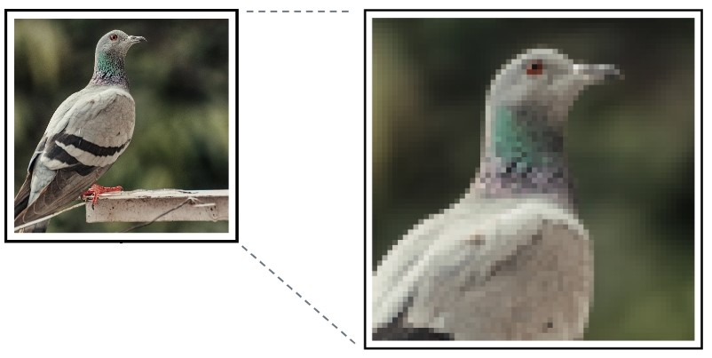

- الوسائط المتعددة Multimedia
هى مجموعة الوسائط مثل الصور, الاصوات, الفيديوهات, والنصوص اللى بنتعامل معاها كل يوم, و ممكن تكون إتجاه واحد زى التلفزيون, او اتجاه رايح جاى زى الفيسبوك اللى بنقدر نقرء فيه و ننشر فيه.
- الصورة Image
تمثيل
مرئى بنشوفه بعينا
رقمى على جهاز الكترونى
للمعلومات مثل صورة فوتوغرافية او رسم بيانى
- البكسل Pixel
هو مربع صغير يستخدم لتكوين الصور, و يعتبر لذلك اصغر وحدة بناء للصورة
- دقة الصورة Image Resolution
تشير إلى مستوى التفاصيل الموجودة فى الصورة, كلما زادت دقة الصورة, زادت التفاصيل فى الصورة. تقاس دقة الصورة بعدد البكسلات فى الانش الواحد Pixel Per Inch PPI أو عدد النقط فى الانش الواحد Dots Per Inch DPI
- الرسومات النُقَطِيًّة Raster Graphics
تتكون من بيكسلات Pixels مرتبة فى شبكة, و لكل بكسل موقع و لون محدد بداخل الشبكة, و لكن لانها تتكون من بيكسلات Pixels, فلا يمكن تغيير حجمها دون فقد الجودة, لانه عند محاولة تغيير حجم صورة نقطية, يتم تمديد البكسيل و تشويهه و بالتالى تصبح الصورة ضبابية او منقطة
مثال
أنواعه
- JPEG
هي صيغة قياسية لتخزين الصور الفوتوغرافية والصور بألوان كثيرة. يمكن ضغط ملفات JPEG لشغل مساحة أقل على الكمبيوتر، ولكن قد تتأثر جودة الصورة نتيجة لذلك.
- PNG
JPEG، ولكنها أفضل في تخزين الصور ذات الكثير من التفاصيل والخطوط الحادة. عادةً ما تكون ملفات PNG أكبر من ملفات JPEG، لكنها لا تفقد الجودة عند ضغطها.
- GIF
صيغة تستخدم غالبًا للصور ذات الرسومات البسيطة وعدد محدود من الألوان. يمكن استخدام ملفات GIF لإنشاء رسوم متحركة بسيطة من خلال عرض سلسلة من الصور في تتابع سريع.
- BMP
صيغة أساسيية للصور تستخدم لتخزين الصور الرقمية. يمكن أن تكون ملفات BMP كبيرة جدًا، ولكن من السهل التعامل معها ويمكن فتحها بواسطة معظم برامج عرض الصور.
- TIFF
صيغة تستخدم غالبًا لتخزين الصور عالية الجودة، مثل تلك المستخدمة في الطباعة. عادةً ما تكون ملفات TIFF كبيرة الحجم، ولكن يمكن ضغطها دون فقدان الجودة.
- الرسومات الإتجاهية Vector Graphics
تتكون من خطوط و أشكال يتم تعريفها بمعادلات رياضيات, و بالتالى يمكن تغيير حجم الرسمة بدون فقد فى الجودة, و بالتالى فهى مناسبة للصور التاى تحتاج إلى تغيير حجمها أو تعديلها بشكل متكرر, مثل شعارات الشركات ع مواقع الويب
مثال
أنواعه
- SVG
صيغة ملف تستخدم لتخزين رسومات متجهية على الويب. تتم كتابة ملفات SVG بصيغة XML ويمكن تغيير حجمها إلى أي حجم دون فقدان الجودة.
- EPS
صيغة ملف تستخدم غالبًا لتخزين رسومات متجهية للطباعة. يمكن فتح ملفات EPS وتحريرها بواسطة معظم برامج الرسومات المتجهية.
- AI
صيغة ملف تستخدم في برنامج Adobe Illustrator. يمكن لملفات AI تخزين كل من الرسومات المتجهية والرسومات النقطية، ويمكن فتحها وتحريرها بواسطة معظم برامج الرسومات المتجهية.
- PDF
صيغة ملف تستخدم غالبًا لتخزين المستندات التي تحتوي على نصوص ورسومات. يمكن لملفات PDF تخزين كل من الرسومات المتجهية والرسومات النقطية، ويمكن فتحها وعرضها بواسطة معظم أجهزة الكمبيوتر والأجهزة الأخرى.
- DXF
صيغة ملف تستخدم لتخزين الرسومات والتصميمات التي تم إنشاؤها باستخدام برنامج CAD (Computer-Aided Design). يمكن فتح ملفات DXF وتحريرها بواسطة معظم برامج الرسومات المتجهية.
span.highlight-word>span.highlight-message